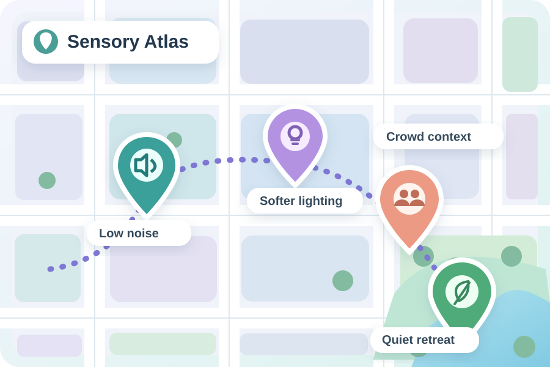
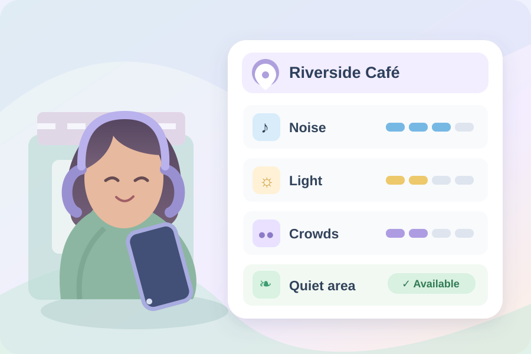
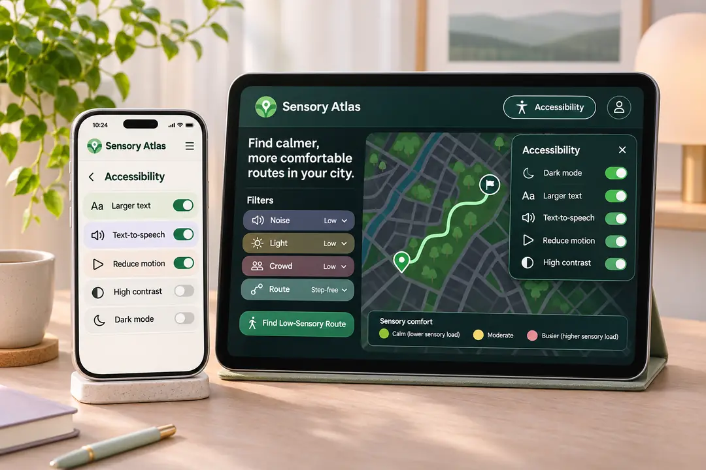

Unexpected noise
Music, chatter, alarms, and sudden sounds can make a familiar activity exhausting.
Accessibility is more than getting through the door. Sensory Atlas imagines a way to explore public places through noise, lighting, crowds, and quiet spaces, with your own comfort in mind.
Early-stage concept. The interactive example below uses fictional places and sample data.

Maps can tell us whether a building has an elevator. They rarely tell us what it might feel like to be inside.
Music, chatter, alarms, and sudden sounds can make a familiar activity exhausting.
Harsh overhead lighting, glare, and flicker are rarely included in accessibility information.
Busy spaces and changing conditions can make it difficult to plan with confidence.
Why can we check whether a building has an elevator, but not whether its lighting, noise, or crowds might overwhelm us?
Sensory Atlas is a proposed collaborative map that gives people meaningful context before they visit a place. Not one universal rating, but information they can interpret based on their needs.
Discover information about sound, lighting, crowd levels, and places to take a break.
Set personal sensory preferences without sharing a diagnosis or medical history.
See different perspectives, when observations were made, and when details may be outdated.

Adjust three preferences to see how a future Sensory Atlas could help you compare places. There is no single definition of a “good” sensory environment.
Explore a fictional neighborhood. Choose a location marker to see its sensory details, then change the preferences below to see how matches change.
Every place shown is fictional. Sensory ratings are illustrative.
Map concept only: This illustrated layout is not a real map, navigation service, or live sensor feed. Selectable pins and the place list use the same fictional sample data.
Maximum intensity that feels comfortable
1 = very quiet, 5 = very noisy
1 = very dim, 5 = very bright
1 = very few people, 5 = very crowded
Illustrative venues, sorted by matched preferences
Concept demo: These are fictional places with invented sample ratings. Matching is simplified and does not represent a safety assessment or live environmental measurements.
People have different preferences. Show the details, not a judgment about the person or place.
Community observations should include timestamps and clear information about data freshness.
No medical diagnosis required. Optional location access and a low-data approach are priorities.
Readable typography, keyboard access, reduced motion, and non-map alternatives matter.

A realistic path from an early-stage idea to a community-supported tool.
Define the problem, design principles, initial illustrations, and a transparent interactive example.
Validate real needs with neurodivergent and sensory-sensitive people before building around assumptions.
Prototype a real map, place details, personal filters, and moderated community observations.
Test with a small group of real places, improve reliability, and explore broader partnerships.
Sensory Atlas began with a personal question. Its goal is to make everyday environments more understandable and give people more freedom to choose what works for them.